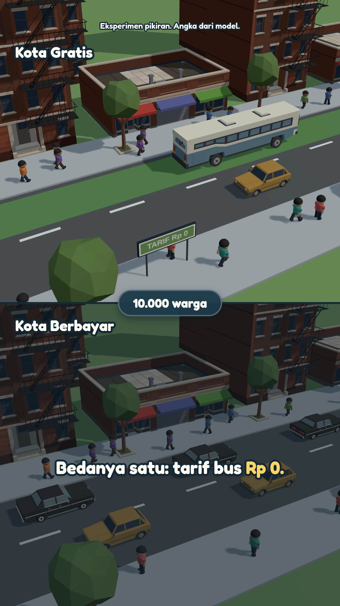
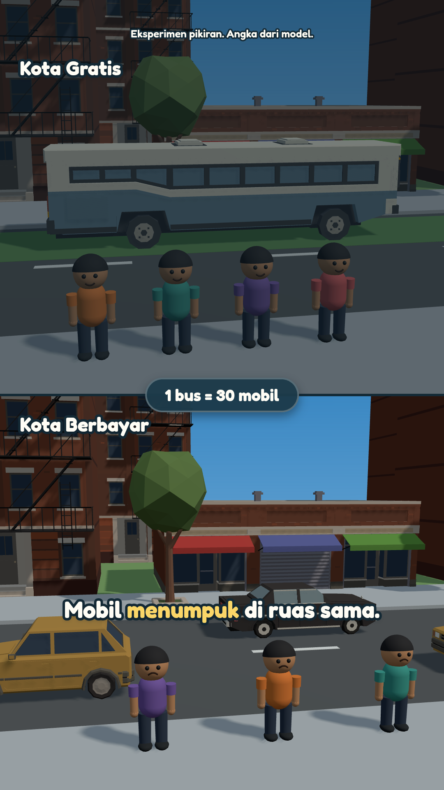
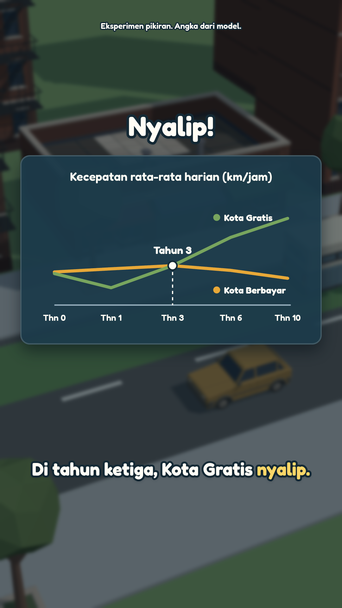

Independent Sample Studies (Illustrative Transfer Topic: Angkutan Umum Gratis · Simulasi 10 Tahun)
1. Street-Level Hook
Polyfork city bus & buildings + procedural commuters at diegetic HALTE BUS plaque, bold headline, active caption.

2. Twin-World Split Setup
50/50 aerial comparison with center control pill (10.000 warga) and spotlight dimming on inactive bottom panel.

3. Physical Mechanism
Street-level 1 bus vs private car gridlock showing spatial efficiency with smiling vs frowning capsule residents.

4. Crossover Data HUD
Dark-navy chart card over dimmed 3D city proving the Year-3 inflection point (Nyalip!).